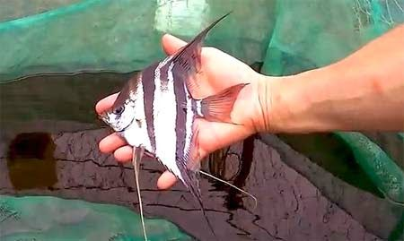

Pterophyllum is a small genus of freshwater fish from the family Cichlidae known to most aquarists as angelfish. All Pterophyllum species originate from the Amazon Basin, Orinoco Basin and various rivers in the Guiana Shield in tropical South America. The three species of Pterophyllum are unusually shaped for cichlids being greatly laterally compressed, with round bodies and elongated triangular dorsal and anal fins. This body shape allows them to hide among roots and plants, often on a vertical surface. Naturally occurring angelfish are frequently striped longitudinally, colouration which provides additional camouflage. Angelfish are ambush predators and prey on small fish and macroinvertebrates. All Pterophyllum species form monogamous pairs. Eggs are generally laid on a submerged log or a flattened leaf. As is the case for other cichlids, brood care is highly developed. Pterophyllum should not be confused with marine angelfish, perciform fish found on shallow ocean reefs.
